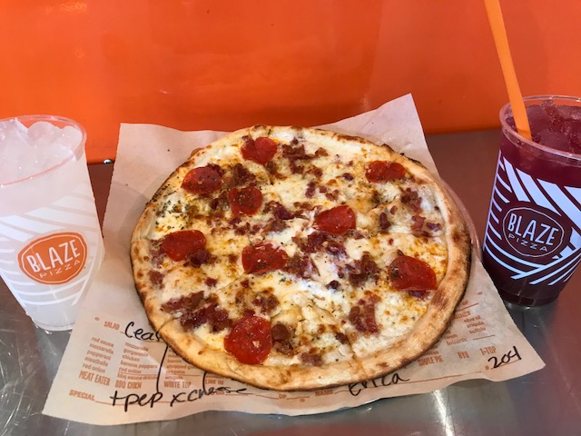

Blaze has healthier pizza and recently, Blaze launched an initiative to
disembarrass its food choice of any artificial ingredients. competently named
“Keepin’ It Real,” the corporate is committed to serving additive-free food
in 2017. Blaze is functioning with its suppliers to get rid of artificial
colors, flavors, preservatives, and high fructose corn syrup.
Specifically, it’s additionally “nixing the nitrates” in its cured meats
like sausage and sausage, removing preservatives in its garlic and dish
dressings, change to “true hue” black olives and banana peppers while not
artificial colors, and moving to barbecue sauce with no high fructose corn syrup.
“To deliver against our commitment, many of our sources upgraded their recipes
only for America. In some cases, we have a tendency to had to hunt out new partners,”
aforesaid Blaze Pizza’s executive chef Bradford Kent during a news release.
“It took months of review before we finally found a banana pepper that met our standards
for each color and style, without artificial colors or preservatives, however it had been
definitely worth the time invested. you actually will taste the distinction.”
Even its pizza pie dough is taken into account “clean.” made up of scratch on a routine,
Blaze’s dough uses simply some straightforward ingredients: natural flour,
extra-virgin oil, filtered water, salt, and a splash of sugar. The company’s restaurants
additionally use property packaging, together with cups, lids, and straws made up of plant-based materials.
Meanwhile Domino’s Pizza was at the bottom of the list with a total score of just 3 out of 100, receiving zero
in each category except for nutrition labeling and transparency in its corporate relationships.